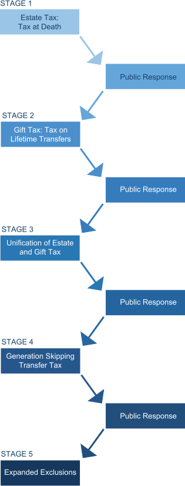

The Federal Transfer Tax System
Tax on the Transfer of Assets
Federal Gift, Estate, and Generation-Skipping Transfer taxes compose what is commonly referred to as the federal "Transfer Tax System" because they deal with the taxation applied to the transfer of assets. Although there are exceptions, some of which will be addressed in this training, any transfer of assets from one party to another is potentially a taxable event. Knowing when these taxes apply is crucial.
Gift, Estate, and Generation-Skipping Transfer Taxes Have Much In Common
At one point in our history, lifetime transfers (gift taxes) were taxed under a system that was totally separate from the taxation of transfers upon death (estate taxes). However, beginning in 1976, the estate tax and gift tax were "unified " into a combined system and have shared many common elements since that time. But there are also elements that are unique to each. This course will begin by introducing the common elements of gift and estate taxes, followed by some of the unique characteristics of each. It will then introduce the taxation of transfers that skip a generation, which also shares some common elements with gift and estate taxes.
The History of Transfer Tax
Click on each Stage and Public Response to learn more.
